Mask R-CNN
Kaiming He Georgia Gkioxari Piotr Dollar Ross Girshick´ Facebook AI Research (FAIR)
Abstract
We present a conceptually simple, flexible, and general frameworkfor object instance segmentation. Our approach efficiently detects objects in an image while simultaneously generating a high-quality segmentation mask for each instance. The method, called Mask R-CNN, extends Faster R-CNN by adding a branch for predicting an object mask in parallel with the existing branch for bounding box recognition. Mask R-CNN is simple to train and adds only a small overhead to Faster R-CNN, running at 5 fps. Moreover, Mask R-CNN is easy to generalize to other tasks, e.g., allowing us to estimate human poses in the sameframework. We show top results in all three tracks ofthe COCO suite of challenges, including instance segmentation, bounding-box object detection, and person keypoint detection. Without tricks, Mask R-CNN outperforms all existing, single-model entries on every task, including the COCO 2016 challenge winners. We hope our simple and effective approach will serve as a solid baseline and help ease future research in instance-level recognition. Code will be made available.
1. Introduction
The vision community has rapidly improved object detection and semantic segmentation results over a short period of time. In large part, these advances have been driven by powerful baseline systems, such as the Fast/Faster R-CNN [9, 29] and Fully Convolutional Network (FCN) [24] frameworks for object detection and semantic segmentation, respectively. These methods are conceptually intuitive and offer flexibility and robustness, together with fast training and inference time. Our goal in this work is to develop a comparably enabling framework for instance segmentation.
Instance segmentation is challenging because it requires the correct detection of all objects in an image while also precisely segmenting each instance. It therefore combines elements from the classical computer vision tasks of object detection, where the goal is to classify individual objects and localize each using a bounding box, and semantic segmentation, where the goal is to classify each pixel into a fixed set of categories without differentiating object instances.1 Given this, one might expect a complex method is required to achieve good results. However, we show that a surprisingly simple, flexible, and fast system can surpass prior state-of-the-art instance segmentation results.
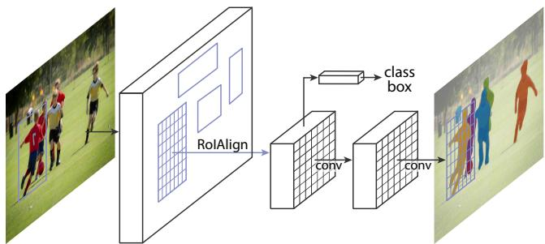
Figure 1. The Mask R-CNN framework for instance segmentation.
Our method, called Mask R-CNN, extends Faster R-CNN [29] by adding a branch for predicting segmentation masks on each Region of Interest (RoI), in parallel with the existing branch for classification and bounding box regression (Figure 1). The mask branch is a small FCN applied to each RoI, predicting a segmentation mask in a pixel-topixel manner. Mask R-CNN is simple to implement and train given the Faster R-CNN framework, which facilitates a wide range of flexible architecture designs. Additionally, the mask branch only adds a small computational overhead, enabling a fast system and rapid experimentation.
In principle Mask R-CNN is an intuitive extension of Faster R-CNN, yet constructing the mask branch properly is critical for good results. Most importantly, Faster R-CNN was not designed for pixel-to-pixel alignment between network inputs and outputs. This is most evident in how RoIPool [14, 9], the de facto core operation for attending to instances, performs coarse spatial quantization for feature extraction. To fix the misalignment, we propose a simple, quantization-free layer, called RoIAlign, that faithfully preserves exact spatial locations. Despite being a seemingly minor change, RoIAlign has a large impact: it improves mask accuracy by relative 10% to 50%, showing bigger gains under stricter localization metrics. Second, we found it essential to decouple mask and class prediction: we predict a binary mask for each class independently, without competition among classes, and rely on the network’s RoI classification branch to predict the category. In contrast, FCNs usually perform per-pixel multi-class categorization, which couples segmentation and classification, and based on our experiments works poorly for instance segmentation.
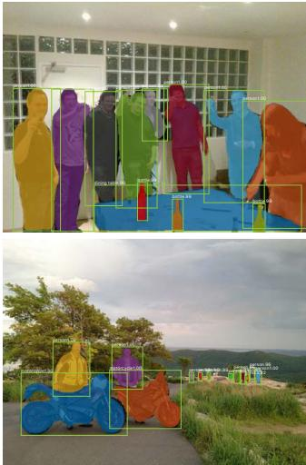
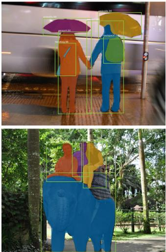
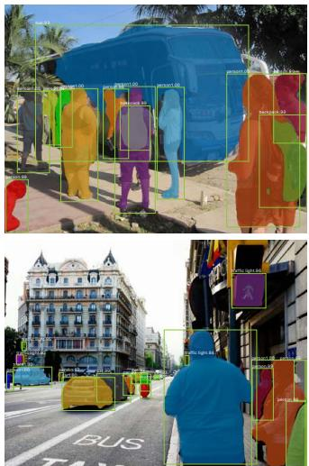
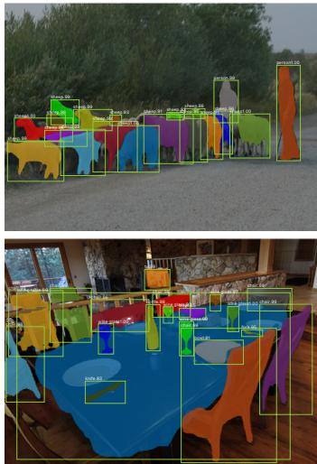
Figure 2. Mask R-CNN results on the COCO test set. These results are based on ResNet-101 [15], achieving a mask AP of 35.7 and running at 5 fps. Masks are shown in color, and bounding box, category, and confidences are also shown.
Without bells and whistles, Mask R-CNN surpasses all previous state-of-the-art single-model results on the COCO instance segmentation task [23], including the heavilyengineered entries from the 2016 competition winner. As a by-product, our method also excels on the COCO object detection task. In ablation experiments, we evaluate multiple basic instantiations, which allows us to demonstrate its robustness and analyze the effects of core factors.
Our models can run at about 200ms per frame on a GPU, and training on COCO takes one to two days on a single 8-GPU machine. We believe the fast train and test speeds, together with the framework’s flexibility and accuracy, will benefit and ease future research on instance segmentation.
Finally, we showcase the generality of our framework via the task of human pose estimation on the COCO keypoint dataset [23]. By viewing each keypoint as a one-hot binary mask, with minimal modification Mask R-CNN can be applied to detect instance-specific poses. Without tricks, Mask R-CNN surpasses the winner of the 2016 COCO keypoint competition, and at the same time runs at 5 fps. Mask R-CNN, therefore, can be seen more broadly as a flexible framework for instance-level recognition and can be readily extended to more complex tasks.
We will release code to facilitate future research.
2. Related Work
R-CNN: The Region-based CNN (R-CNN) approach [10] to bounding-box object detection is to attend to a manageable number of candidate object regions [33, 16] and evalu ate convolutional networks [20, 19] independently on each RoI. R-CNN was extended [14, 9] to allow attending to RoIs on feature maps using RoIPool, leading to fast speed and better accuracy. Faster R-CNN [29] advanced this stream by learning the attention mechanism with a Region Proposal Network (RPN). Faster R-CNN is flexible and robust to many follow-up improvements (e.g., [30, 22, 17]), and is the current leading framework in several benchmarks.
Instance Segmentation: Driven by the effectiveness of R-CNN, many approaches to instance segmentation are based on segment proposals. Earlier methods [10, 12, 13, 6] resorted to bottom-up segments [33, 2]. DeepMask [27] and following works [28, 5] learn to propose segment candidates, which are then classified by Fast R-CNN. In these methods, segmentation precedes recognition, which is slow and less accurate. Likewise, Dai et al. [7] proposed a complex multiple-stage cascade that predicts segment proposals from bounding-box proposals, followed by classification. Instead, our method is based on parallel prediction of masks and class labels, which is simpler and more flexible.
Most recently, Li et al. [21] combined the segment proposal system in [5] and object detection system in [8] for “fully convolutional instance segmentation” (FCIS). The common idea in [5, 8, 21] is to predict a set of positionsensitive output channels fully convolutionally. These channels simultaneously address object classes, boxes, and masks, making the system fast. But FCIS exhibits systematic errors on overlapping instances and creates spurious edges (Figure 5), showing that it is challenged by the fundamental difficulties of segmenting instances.
3. Mask R-CNN
Mask R-CNN is conceptually simple: Faster R-CNN has two outputs for each candidate object, a class label and a bounding-box offset; to this we add a third branch that outputs the object mask. Mask R-CNN is thus a natural and intuitive idea. But the additional mask output is distinct from the class and box outputs, requiring extraction of muchfiner spatial layout of an object. Next, we introduce the key elements of Mask R-CNN, including pixel-to-pixel alignment, which is the main missing piece of Fast/Faster R-CNN.
Faster R-CNN: We begin by briefly reviewing the Faster R-CNN detector [29]. Faster R-CNN consists of two stages. The first stage, called a Region Proposal Network (RPN), proposes candidate object bounding boxes. The second stage, which is in essence Fast R-CNN [9], extracts features using RoIPool from each candidate box and performs classification and bounding-box regression. The features used by both stages can be shared for faster inference. We refer readers to [17] for latest, comprehensive comparisons between Faster R-CNN and other frameworks.
Mask R-CNN: Mask R-CNN adopts the same two-stage procedure, with an identical first stage (which is RPN). In the second stage, in parallel to predicting the class and box offset, Mask R-CNN also outputs a binary mask for each RoI. This is in contrast to most recent systems, where classification depends on mask predictions (e.g. [27, 7, 21]). Our approach follows the spirit of Fast R-CNN [9] that applies bounding-box classification and regression in parallel (which turned out to largely simplify the multi-stage pipeline of original R-CNN [10]).
Formally, during training, we define a multi-task loss on each sampled RoI as . The classification loss and bounding-box loss are identical as those defined in [9]. The mask branch has a dimensional output for each RoI, which encodes K binary masks of resolution , one for each of the K classes. To this we apply a per-pixel sigmoid, and define as the average binary cross-entropy loss. For an RoI associated with ground-truth class k, is only defined on the k-th mask (other mask outputs do not contribute to the loss).
Our definition of allows the network to generate masks for every class without competition among classes; we rely on the dedicated classification branch to predict the class label used to select the output mask. This decouples mask and class prediction. This is different from common practice when applying FCNs [24] to semantic segmentation, which typically uses a per-pixel softmax and a multinomial cross-entropy loss. In that case, masks across classes compete; in our case, with a per-pixel sigmoid and a binary loss, they do not. We show by experiments that this formulation is key for good instance segmentation results.
Mask Representation: A mask encodes an input object’s spatial layout. Thus, unlike class labels or box offsets that are inevitably collapsed into short output vectors by fully-connected (fc) layers, extracting the spatial structure of masks can be addressed naturally by the pixel-to-pixel correspondence provided by convolutions.
Specifically, we predict an m m mask from each RoI using an FCN [24]. This allows each layer in the mask branch to maintain the explicit m m object spatial layout without collapsing it into a vector representation that lacks spatial dimensions. Unlike previous methods that resort to fc layers for mask prediction [27, 28, 7], our fully convolutional representation requires fewer parameters, and is more accurate as demonstrated by experiments.
This pixel-to-pixel behavior requires our RoI features, which themselves are small feature maps, to be well aligned to faithfully preserve the explicit per-pixel spatial corre spondence. This motivated us to develop the following RoIAlign layer that plays a key role in mask prediction.
RoIAlign: RoIPool [9] is a standard operation for extracting a small feature map (e.g., 7 7) from each RoI. RoIPool first quantizes a floating-number RoI to the discrete granularity of the feature map, this quantized RoI is then subdi vided into spatial bins which are themselves quantized, and finally feature values covered by each bin are aggregated (usually by max pooling). Quantization is performed, e.g., on a continuous coordinate x by computing [x/16], where 16 is a feature map stride and [ ] is rounding; likewise, quantization is performed when dividing into bins (e.g., 7 7). These quantizations introduce misalignments between the RoI and the extracted features. While this may not impact classification, which is robust to small translations, it has a large negative effect on predicting pixel-accurate masks.
To address this, we propose an RoIAlign layer that removes the harsh quantization of RoIPool, properly aligning the extracted features with the input. Our proposed change is simple: we avoid any quantization of the RoI boundaries or bins (i.e., we use x/16 instead of [x/16]). We use bilinear interpolation [18] to compute the exact values of the input features at four regularly sampled locations in each RoI bin, and aggregate the result (using max or average).2
RoIAlign leads to large improvements as we show in 4.2. We also compare to the RoIWarp operation proposed in [7]. Unlike RoIAlign, RoIWarp overlooked the alignment issue and was implemented in [7] as quantizing RoI just like RoIPool. So even though RoIWarp also adopts bilinear resampling motivated by [18], it performs on par with RoIPool as shown by experiments (more details in Table 2c), demonstrating the crucial role of alignment.
Network Architecture: To demonstrate the generality of our approach, we instantiate Mask R-CNN with multiple architectures. For clarity, we differentiate between: (i) the convolutional backbone architecture used for feature extraction over an entire image, and (ii) the network head for bounding-box recognition (classification and regression) and mask prediction that is applied separately to each RoI.
We denote the backbone architecture using the nomenclature network-depth-features. We evaluate ResNet [15] and ResNeXt [35] networks of depth 50 or 101 layers. The original implementation of Faster R-CNN with ResNets [15] extracted features from the final convolutional layer of the 4-th stage, which we call C4. This backbone with ResNet-50, for example, is denoted by ResNet-50-C4. This is a common choice used in [15, 7, 17, 31].
We also explore another more effective backbone recently proposed by Lin et al. [22], called a Feature Pyramid Network (FPN). FPN uses a top-down architecture with lateral connections to build an in-network feature pyramid from a single-scale input. Faster R-CNN with an FPN backbone extracts RoI features from different levels of the feature pyramid according to their scale, but otherwise the rest of the approach is similar to vanilla ResNet. Using a ResNet-FPN backbone for feature extraction with Mask R-CNN gives excellent gains in both accuracy and speed. For further details on FPN, we refer readers to [22].
For the network head we closely follow architectures presented in previous work to which we add a fully convolutional mask prediction branch. Specifically, we extend the Faster R-CNN box heads from the ResNet [15] and FPN [22] papers. Details are shown in Figure 3. The head on the ResNet-C4 backbone includes the 5-th stage of ResNet (namely, the 9-layer ‘res5’ [15]), which is computeintensive. For FPN, the backbone already includes res5 and thus allows for a more efficient head that uses fewer filters.
We note that our mask branches have a straightforward structure. More complex designs have the potential to improve performance but are not the focus of this work.
3.1. Implementation Details
We set hyper-parameters following existing Fast/Faster R-CNN work [9, 29, 22]. Although these decisions were made for object detection in original papers [9, 29, 22], we found our instance segmentation system is robust to them.
Training: As in Fast R-CNN, an RoI is considered positive if it has IoU with a ground-truth box of at least 0.5 and negative otherwise. The mask loss is defined only on positive RoIs. The mask target is the intersection between an RoI and its associated ground-truth mask.
We adopt image-centric training [9]. Images are resized such that their scale (shorter edge) is 800 pixels [22]. Each mini-batch has 2 images per GPU and each image has N sampled RoIs, with a ratio of 1:3 of positive to negatives [9]. N is 64 for the C4 backbone (as in [9, 29]) and 512 for FPN (as in [22]). We train on 8 GPUs (so effective minibatch size is 16) for 160k iterations, with a learning rate of 0.02 which is decreased by 10 at the 120k iteration. We use a weight decay of 0.0001 and a momentum of 0.9.
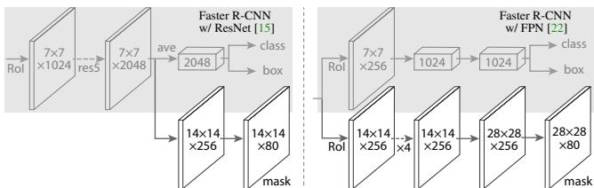
Figure 3. Head Architecture: We extend two existing Faster R-CNN heads [15, 22]. Left/Right panels show the heads for the ResNet C4 and FPN backbones, from [15] and [22], respectively, to which a mask branch is added. Numbers denote spatial resolution and channels. Arrows denote either conv, deconv, orfc layers as can be inferred from context (conv preserves spatial dimension while deconv increases it). All convs are 3 3, except the output conv which is 1 1, deconvs are 2 2 with stride 2, and we use ReLU [25] in hidden layers. Left: ‘res5’ denotes ResNet’s fifth stage, which for simplicity we altered so that the first conv operates on a 7 7 RoI with stride 1 (instead of 14 14 / stride 2 as in [15]). Right: ‘ 4’ denotes a stack of four consecutive convs.
The RPN anchors span 5 scales and 3 aspect ratios, following [22]. For convenient ablation, RPN is trained separately and does not share features with Mask R-CNN, unless specified. For every entry in this paper, RPN and Mask R-CNN have the same backbones and so they are shareable.
Inference: At test time, the proposal number is 300 for the C4 backbone (as in [29]) and 1000 for FPN (as in [22]). We run the box prediction branch on these proposals, followed by non-maximum suppression [11]. The mask branch is then applied to the highest scoring 100 detection boxes. Although this differs from the parallel computation used in training, it speeds up inference and improves accuracy (due to the use of fewer, more accurate RoIs). The mask branch can predict K masks per RoI, but we only use the k-th mask, where k is the predicted class by the classification branch. The m m floating-number mask output is then resized to the RoI size, and binarized at a threshold of 0.5.
Note that since we only compute masks on the top 100 detection boxes, Mask R-CNN adds a small overhead to its Faster R-CNN counterpart on typical models).
4. Experiments: Instance Segmentation
We perform a thorough comparison of Mask R-CNN to the state of the art along with comprehensive ablation experiments. We use the COCO dataset [23] for all experiments. We report the standard COCO metrics including AP (averaged over IoU thresholds), , and (AP at different scales). Unless otherwise noted, AP is evaluating using mask IoU. As in previous work [3, 22], we train using the union of 80k train images and a 35k subset of val images (trainval35k), and report ablations on the remaining 5k subset of val images (minival). We also report results on test-dev [23], which has no disclosed labels. Upon publication, we will upload our full results on test-std to the public leaderboard, as recommended.
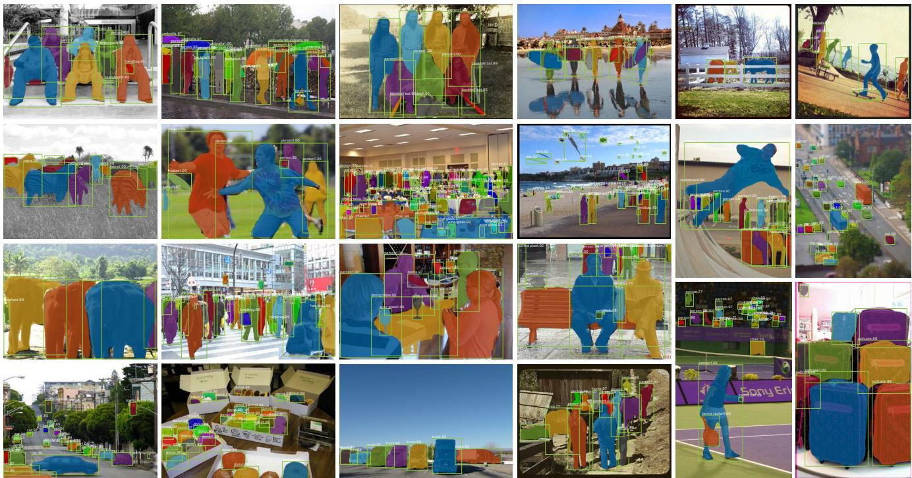
Figure 4. More results of Mask R-CNN on COCO test images, using ResNet-101-FPN and running at 5 fps, with 35.7 mask AP (Table 1).
| backbone | AP | ||||||
| MNC [7] | ResNet-101-C4 | 24.6 | 44.3 | 24.8 | 4.7 | 25.9 | 43.6 |
| FCIS [21] +OHEM | ResNet-101-C5-dilated | 29.2 | 49.5 | = | 7.1 | 31.3 | 50.0 |
| FCIS+++ [21] +OHEM | ResNet-101-C5-dilated | 33.6 | 54.5 | 1 | = | = | = |
| Mask R-CNN | ResNet-101-C4 | 33.1 | 54.9 | 34.8 | 12.1 | 35.6 | 51.1 |
| Mask R-CNN | ResNet-101-FPN | 35.7 | 58.0 | 37.8 | 15.5 | 38.1 | 52.4 |
| Mask R-CNN | ResNeXt-101-FPN | 37.1 | 60.0 | 39.4 | 16.9 | 39.9 | 53.5 |
Table 1. Instance segmentation mask AP on COCO test-dev. MNC [7] and FCIS [21] are the winners of the COCO 2015 and 2016 segmentation challenges, respectively. Without bells and whistles, Mask R-CNN outperforms the more complex FCIS+++, which includes multi-scale train/test, horizontal flip test, and OHEM [30]. All entries are single-model results.
4.1. Main Results
We compare Mask R-CNN to the state-of-the-art methods in instance segmentation in Table 1. All instantiations of our model outperform baseline variants of previous state-of-the-art models. This includes MNC [7] and FCIS [21], the winners of the COCO 2015 and 2016 segmentation challenges, respectively. Without bells and whistles, Mask R-CNN with ResNet-101-FPN backbone outperforms FCIS+++ [21], which includes multi-scale train/test, horizontal flip test, and online hard example mining (OHEM) [30]. While outside the scope of this work, we expect many such improvements to be applicable to ours.
Mask R-CNN outputs are visualized in Figures 2 and 4. Mask R-CNN achieves good results even under challenging conditions. In Figure 5 we compare our Mask R-CNN baseline and FCIS+++ [21]. FCIS+++ exhibits systematic artifacts on overlapping instances, suggesting that it is challenged by the fundamental difficulty of instance segmentation. Mask R-CNN shows no such artifacts.
4.2. Ablation Experiments
We run a number of ablations to analyze Mask R-CNN. Results are shown in Table 2 and discussed in detail next.
Architecture: Table 2a shows Mask R-CNN with various backbones. It benefits from deeper networks (50 vs. 101) and advanced designs including FPN and ResNeXt3. We note that not all frameworks automatically benefit from deeper or advanced networks (see benchmarking in [17]).
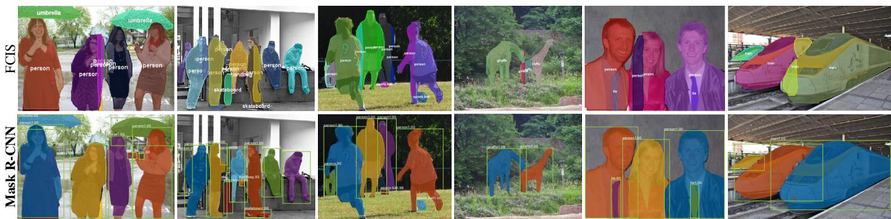
Figure 5. FCIS+++ [21] (top) vs. Mask R-CNN (bottom, ResNet-101-FPN). FCIS exhibits systematic artifacts on overlapping objects.
| net-depth-features | AP | ||
| ResNet-50-C4 ResNet-101-C4 | 30.3 | 51.2 | 31.5 |
| 32.7 | 54.2 | 34.3 | |
| ResNet-50-FPN | 33.6 | 55.2 | 35.3 |
| ResNet-101-FPN | 35.4 | 57.3 | 37.5 |
| ResNeXt-101-FPN | 36.7 | 59.5 | 38.9 |
(a) Backbone Architecture: Better backbones bring expected gains: deeper networks do better, FPN outperforms C4 features, and ResNeXt improves on ResNet.
| AP | |||
| softmax | 24.8 | 44.1 | 25.1 |
| sigmoid | 30.3 | 51.2 | 31.5 |
| +5.5 | +7.1 | +6.4 |
(b) Multinomial vs. Independent Masks (ResNet-50-C4): Decoupling via perclass binary masks (sigmoid) gives large gains over multinomial masks (softmax).
| align? | bilinear? | agg. | AP | |||
| RoIPool [9] | max | 26.9 | 48.8 | 26.4 | ||
| RoIWarp [7] | √ | max | 27.2 | 49.2 | 27.1 | |
| √ | ave | 27.1 | 48.9 | 27.1 | ||
| RoIAlign | √ | √ | max | 30.2 | 51.0 | 31.8 |
| √ | √ | ave | 30.3 | 51.2 | 31.5 |
(c) RoIAlign (ResNet-50-C4): Mask results with various RoI layers. Our RoIAlign layer improves AP by 3 points and by ∼5 points. Using proper alignment is the only factor that contributes to the large gap between RoI layers.
| AP | ||||||
| RoIPool | 23.6 | 46.5 | 21.6 | 28.2 | 52.7 | 26.9 |
| RoIAlign | 30.9 | 51.8 | 32.1 | 34.0 | 55.3 | 36.4 |
| +7.3 | + 5.3 | +10.5 | +5.8 | +2.6 | +9.5 |
(d) RoIAlign (ResNet-50-C5, stride 32): Mask-level and box-level AP using large-stride features. Misalignments are more severe than with stride-16 features (Table 2c), resulting in massive accuracy gaps.
| mask branch | AP | |||
| MLP MLP | fc: 1024→1024→80·282 | 31.5 | 53.7 | 32.8 |
| FCN | conv: 256→256→256→256→256→80 | 31.5 33.6 | 54.0 55.2 | 32.6 35.3 |
(e) Mask Branch (ResNet-50-FPN): Fully convolutional networks (FCN) vs. multi-layer perceptrons (MLP, fully-connected) for mask prediction. FCNs improve results as they take advantage of explicitly encoding spatial layout.
Table 2. Ablations for Mask R-CNN. We train on trainval35k, test on minival, and report mask AP unless otherwise noted.
Multinomial vs. Independent Masks: Mask R-CNN decouples mask and class prediction: as the existing box branch predicts the class label, we generate a mask for each class without competition among classes (by a per-pixel sigmoid and a binary loss). In Table 2b, we compare this to using a per-pixel softmax and a multinomial loss (as commonly used in FCN [24]). This alternative couples the tasks of mask and class prediction, and results in a severe loss in mask AP (5.5 points). This suggests that once the instance has been classified as a whole (by the box branch), it is sufficient to predict a binary mask without concern for the categories, which makes the model easier to train.
Class-Specific vs. Class-Agnostic Masks: Our default instantiation predicts class-specific masks, i.e., one m m mask per class. Interestingly, Mask R-CNN with classagnostic masks (i.e., predicting a single m m output regardless of class) is nearly as effective: it has 29.7 mask AP vs. 30.3 for the class-specific counterpart on ResNet-50-C4. This further highlights the division of labor in our approach which largely decouples classification and segmentation.
RoIAlign: An evaluation of our proposed RoIAlign layer is shown in Table 2c. For this experiment we use the ResNet-50-C4 backbone, which has stride 16. RoIAlign improves
AP by about 3 points over RoIPool, with much of the gain coming at high IoU . RoIAlign is insensitive to max/average pool; we use average in the rest of the paper.
Additionally, we compare with RoIWarp proposed in MNC [7] that also adopt bilinear sampling. As discussed in 3, RoIWarp still quantizes the RoI, losing alignment with the input. As can be seen in Table 2c, RoIWarp performs on par with RoIPool and much worse than RoIAlign. This highlights that proper alignment is key.
We also evaluate RoIAlign with a ResNet-50-C5 backbone, which has an even larger stride of 32 pixels. We use the same head as in Figure 3 (right), as the res5 head is not applicable. Table 2d shows that RoIAlign improves mask AP by a massive 7.3 points, and mask by 10.5 points (50% relative improvement). Moreover, we note that with RoIAlign, using stride-32 C5 features (30.9 AP) is more accurate than using stride-16 C4 features (30.3 AP, Table 2c). RoIAlign largely resolves the long-standing challenge of using large-stride features for detection and segmentation.
Finally, RoIAlign shows a gain of 1.5 mask AP and 0.5 box AP when used with FPN, which has finer multi-level strides. For keypoint detection that requires finer alignment, RoIAlign shows large gains even with FPN (Table 6).
| backbone | |||||||
| Faster R-CNN+++ [15] | ResNet-101-C4 | 34.9 | 55.7 | 37.4 | 15.6 | 38.7 | 50.9 |
| Faster R-CNN w FPN [22] | ResNet-101-FPN | 36.2 | 59.1 | 39.0 | 18.2 | 39.0 | 48.2 |
| Faster R-CNN by G-RMI [17] | Inception-ResNet-v2 [32] | 34.7 | 55.5 | 36.7 | 13.5 | 38.1 | 52.0 |
| Faster R-CNN w TDM [31] | Inception-ResNet-v2-TDM | 36.8 | 57.7 | 39.2 | 16.2 | 39.8 | 52.1 |
| Faster R-CNN, RoIAlign | ResNet-101-FPN | 37.3 | 59.6 | 40.3 | 19.8 | 40.2 | 48.8 |
| Mask R-CNN | ResNet-101-FPN | 38.2 | 60.3 | 41.7 | 20.1 | 41.1 | 50.2 |
| Mask R-CNN | ResNeXt-101-FPN | 39.8 | 62.3 | 43.4 | 22.1 | 43.2 | 51.2 |
Table 3. Object detection single-model results (bounding box AP), vs. state-of-the-art on test-dev. Mask R-CNN using ResNet-101- FPN outperforms the base variants of all previous state-of-the-art models (the mask output is ignored in these experiments). The gains of Mask R-CNN over [22] come from using RoIAlign ), multitask training , and ResNeXt-101
Mask Branch: Segmentation is a pixel-to-pixel task and we exploit the spatial layout of masks by using an FCN. In Table 2e, we compare multi-layer perceptrons (MLP) and FCNs, using a ResNet-50-FPN backbone. Using FCNs gives a 2.1 mask AP gain over MLPs. We note that we choose this backbone so that the conv layers of the FCN head are not pre-trained, for a fair comparison with MLP.
4.3. Bounding Box Detection Results
We compare Mask R-CNN to the state-of-the-art COCO bounding-box object detection in Table 3. For this result, even though the full Mask R-CNN model is trained, only the classification and box outputs are used at inference (the mask output is ignored). Mask R-CNN using ResNet-101- FPN outperforms the base variants of all previous state-ofthe-art models, including the single-model variant of G-RMI [17], the winner of the COCO 2016 Detection Challenge. Using ResNeXt-101-FPN, Mask R-CNN further improves results, with a margin of 3.0 points box AP over the best previous single model entry from [31] (which used Inception-ResNet-v2-TDM).
As a further comparison, we trained a version of Mask R-CNN but without the mask branch, denoted by “Faster R-CNN, RoIAlign” in Table 3. This model performs better than the model presented in [22] due to RoIAlign. On the other hand, it is 0.9 points box AP lower than Mask R-CNN. This gap of Mask R-CNN on box detection is therefore due solely to the benefits of multi-task training.
Lastly, we note that Mask R-CNN attains a small gap between its mask and box AP: e.g., 2.7 points between 37.1 (mask, Table 1) and 39.8 (box, Table 3). This indicates that our approach largely closes the gap between object detection and the more challenging instance segmentation task.
4.4. Timing
Inference: We train a ResNet-101-FPN model that shares features between the RPN and Mask R-CNN stages, following the 4-step training of Faster R-CNN [29]. This model runs at 195ms per image on an Nvidia Tesla M40 GPU (plus 15ms CPU time resizing the outputs to the original resolution), and achieves statistically the same mask AP as the unshared one. We also report that the ResNet-101-C4 variant takes 400ms as it has a heavier box head (Figure 3), so we do not recommend using the C4 variant in practice.
Although Mask R-CNN is fast, we note that our design is not optimized for speed, and better speed/accuracy tradeoffs could be achieved [17], e.g., by varying image sizes and proposal numbers, which is beyond the scope of this paper.
Training: Mask R-CNN is also fast to train. Training with ResNet-50-FPN on COCO trainval35k takes 32 hours in our synchronized 8-GPU implementation (0.72s per 16- image mini-batch), and 44 hours with ResNet-101-FPN. In fact, fast prototyping can be completed in less than one day when training on the train set. We hope such rapid training will remove a major hurdle in this area and encourage more people to perform research on this challenging topic.
5. Mask R-CNN for Human Pose Estimation
Our framework can easily be extended to human pose estimation. We model a keypoint’s location as a one-hot mask, and adopt Mask R-CNN to predict K masks, one for each of K keypoint types (e.g., left shoulder, right elbow). This task helps demonstrate the flexibility of Mask R-CNN.
We note that minimal domain knowledge for human pose is exploited by our system, as the experiments are mainly to demonstrate the generality of the Mask R-CNN framework. We expect that domain knowledge (e.g., modeling structures [4]) will be complementary to our simple approach, but it is beyond the scope of this paper.
Implementation Details: We make minor modifications to the segmentation system when adapting it for keypoints. For each of the K keypoints of an instance, the training target is a one-hot m m binary mask where only a single pixel is labeled as foreground. During training, for each visible ground-truth keypoint, we minimize the cross-entropy loss over an m2-way softmax output (which encourages a single point to be detected). We note that as in instance segmentation, the K keypoints are still treated independently.
We adopt the ResNet-FPN variant, and the keypoint head architecture is similar to that in Figure 3 (right). The keypoint head consists of a stack of eight 3 3 512-d conv layers, followed by a deconv layer and 2 bilinear upscaling, producing an output resolution of 56 56. We found that a relatively high resolution output (compared to masks) is required for keypoint-level localization accuracy.
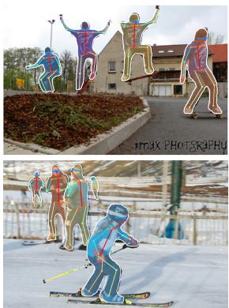
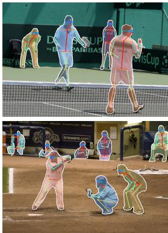
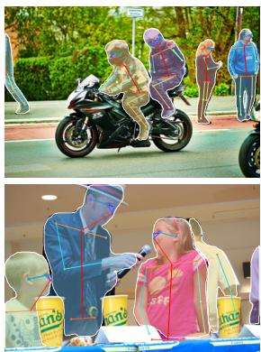
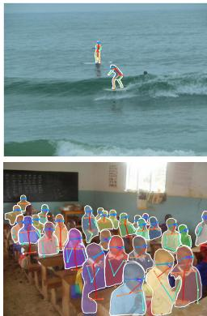
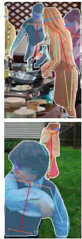
Figure 6. Keypoint detection results on COCO test using Mask R-CNN (ResNet-50-FPN), with person segmentation masks predicted from the same model. This model has a keypoint AP of 63.1 and runs at 5 fps.
| CMU-Pose+++ [4] G-RMI [26]† | 61.8 62.4 | 84.9 84.0 | 67.5 68.5 | 57.1 59.1 | 68.2 68.1 |
| Mask R-CNN, keypoint-only | 62.7 | 87.0 | 68.4 | 57.4 | 71.1 |
| Mask R-CNN, keypoint & mask | 63.1 | 87.3 | 68.7 | 57.8 | 71.4 |
Table 4. Keypoint detection AP on COCO test-dev. Ours (ResNet-50-FPN) is a single model that runs at 5 fps. CMU-Pose+++ [4] is the 2016 competition winner that uses multi-scale testing, post-processing with CPM [34], and filtering with an object detector, adding a cumulative 5 points (clarified in personal communication). †: G-RMI was trained on COCO plus MPII [1] (25k images), using two models (Inception-ResNet- 101). As they use more data, this is not a direct comparison with Mask R-CNN.
Models are trained on all COCO trainval35k images that contain annotated keypoints. To reduce overfitting, as this training set is smaller, we train the models using image scales randomly sampled from [640, 800] pixels; inference is on a single scale of 800 pixels. We train for 90k iterations, starting from a learning rate of 0.02 and reducing it by 10 at 60k and 80k iterations. We use bounding-box non-maximum suppression with a threshold of 0.5. Other implementations are identical as in 3.1.
Experiments on Human Pose Estimation: We evaluate the person keypoint AP using ResNet-50-FPN. We have experimented with ResNet-101 and found it achieves similar results, possibly because deeper models benefit from more training data, but this dataset is relatively small.
Table 4 shows that our result (62.7 is 0.9 points higher than the COCO 2016 keypoint detection winner [4] that uses a multi-stage processing pipeline (see caption of Table 4). Our method is considerably simpler and faster.
More importantly, we have a unified model that can simultaneously predict boxes, segments, and keypoints while running at 5 fps. Adding a segment branch (for the person category) improves the to 63.1 (Table 4) on test-dev. More ablations of multi-task learning on minival are in Table 5. Adding the mask branch to the box-only Faster R-CNN) or keypoint-only versions consistently improves these tasks. However, adding the keypoint branch reduces the box/mask AP slightly, suggesting that while keypoint detection benefits from multitask training, it does not in turn help the other tasks. Nevertheless, learning all three tasks jointly enables a unified system to efficiently predict all outputs simultaneously (Figure 6).
| Faster R-CNN | 52.5 | ||
| Mask R-CNN, mask-only | 53.6 | 45.8 | |
| Mask R-CNN, keypoint-only | 50.7 | 64.2 | |
| Mask R-CNN, keypoint & mask | 52.0 | 45.1 | 64.7 |
Table 5. Multi-task learning of box, mask, and keypoint about theperson category, evaluated on minival. All entries are trained on the same data for fair comparisons. The backbone is ResNet-50-FPN. The entry with 64.2 AP on minival has 62.7 AP on test-dev. The entry with 64.7 AP on minival has 63.1 AP on test-dev (see Table 4).
| RoIPool | 59.8 | 86.2 | 66.7 | 55.1 | 67.4 |
| RoIAlign | 64.2 | 86.6 | 69.7 | 58.7 | 73.0 |
Table 6. RoIAlign vs. RoIPool for keypoint detection on minival.
We also investigate the effect of RoIAlign on keypoint detection (Table 6). Though this ResNet-50-FPN backbone has finer strides (e.g., 4 pixels on the finest level), RoIAlign still shows significant improvement over RoIPool and increases by 4.4 points. This is because keypoint detections are more sensitive to localization accuracy. This again indicates that alignment is essential for pixel-level localization, including masks and keypoints.
Given the effectiveness of Mask R-CNN for extracting object bounding boxes, masks, and keypoints, we expect it be an effective framework for other instance-level tasks.
References
[1] M. Andriluka, L. Pishchulin, P. Gehler, and B. Schiele. 2D human pose estimation: New benchmark and state of the art analysis. In CVPR, 2014. 8
[2] P. Arbelaez, J. Pont-Tuset, J. T. Barron, F. Marques, and ´ J. Malik. Multiscale combinatorial grouping. In CVPR, 2014. 2
[3] S. Bell, C. L. Zitnick, K. Bala, and R. Girshick. Insideoutside net: Detecting objects in context with skip pooling and recurrent neural networks. In CVPR, 2016. 5
[4] Z. Cao, T. Simon, S.-E. Wei, and Y. Sheikh. Realtime multiperson 2d pose estimation using part affinity fields. In CVPR, 2017. 7, 8
[5] J. Dai, K. He, Y. Li, S. Ren, and J. Sun. Instance-sensitive fully convolutional networks. In ECCV, 2016. 2
[6] J. Dai, K. He, and J. Sun. Convolutional feature masking for joint object and stuff segmentation. In CVPR, 2015. 2
[7] J. Dai, K. He, and J. Sun. Instance-aware semantic segmentation via multi-task network cascades. In CVPR, 2016. 2, 3, 4, 5, 6
[8] J. Dai, Y. Li, K. He, and J. Sun. R-FCN: Object detection via region-based fully convolutional networks. In NIPS, 2016. 2
[9] R. Girshick. Fast R-CNN. In ICCV, 2015. 1, 2, 3, 4, 6
[10] R. Girshick, J. Donahue, T. Darrell, and J. Malik. Rich feature hierarchies for accurate object detection and semantic segmentation. In CVPR, 2014. 2, 3
[11] R. Girshick, F. Iandola, T. Darrell, and J. Malik. Deformable part models are convolutional neural networks. In CVPR, 2015. 4
[12] B. Hariharan, P. Arbelaez, R. Girshick, and J. Malik. Simul-´ taneous detection and segmentation. In ECCV. 2014. 2
[13] B. Hariharan, P. Arbelaez, R. Girshick, and J. Malik. Hyper-´ columns for object segmentation and fine-grained localization. In CVPR, 2015. 2
[14] K. He, X. Zhang, S. Ren, and J. Sun. Spatial pyramid pooling in deep convolutional networks for visual recognition. In ECCV. 2014. 1, 2
[15] K. He, X. Zhang, S. Ren, and J. Sun. Deep residual learning for image recognition. In CVPR, 2016. 2, 4, 7
[16] J. Hosang, R. Benenson, P. Dollar, and B. Schiele. What´ makes for effective detection proposals? PAMI, 2015. 2
[17] J. Huang, V. Rathod, C. Sun, M. Zhu, A. Korattikara, A. Fathi, I. Fischer, Z. Wojna, Y. Song, S. Guadarrama, et al. Speed/accuracy trade-offs for modern convolutional object detectors. In CVPR, 2017. 2, 3, 4, 5, 7
[18] M. Jaderberg, K. Simonyan, A. Zisserman, and K. Kavukcuoglu. Spatial transformer networks. In NIPS, 2015. 3
[19] A. Krizhevsky, I. Sutskever, and G. Hinton. ImageNet classification with deep convolutional neural networks. In NIPS, 2012. 2
[20] Y. LeCun, B. Boser, J. S. Denker, D. Henderson, R. E. Howard, W. Hubbard, and L. D. Jackel. Backpropagation applied to handwritten zip code recognition. Neural computation, 1989. 2
[21] Y. Li, H. Qi, J. Dai, X. Ji, and Y. Wei. Fully convolutional instance-aware semantic segmentation. In CVPR, 2017. 2, 3, 5, 6
[22] T.-Y. Lin, P. Dollar, R. Girshick, K. He, B. Hariharan, and´ S. Belongie. Feature pyramid networks for object detection. In CVPR, 2017. 2, 4, 5, 7
[23] T.-Y. Lin, M. Maire, S. Belongie, J. Hays, P. Perona, D. Ramanan, P. Dollar, and C. L. Zitnick. Microsoft COCO: Com-´ mon objects in context. In ECCV, 2014. 2, 4, 5
[24] J. Long, E. Shelhamer, and T. Darrell. Fully convolutional networks for semantic segmentation. In CVPR, 2015. 1, 3, 6
[25] V. Nair and G. E. Hinton. Rectified linear units improve restricted boltzmann machines. In ICML, 2010. 4
[26] G. Papandreou, T. Zhu, N. Kanazawa, A. Toshev, J. Tompson, C. Bregler, and K. Murphy. Towards accurate multiperson pose estimation in the wild. In CVPR, 2017. 8
[27] P. O. Pinheiro, R. Collobert, and P. Dollar. Learning to segment object candidates. In NIPS, 2015. 2, 3
[28] P. O. Pinheiro, T.-Y. Lin, R. Collobert, and P. Dollar. Learn-´ ing to refine object segments. In ECCV, 2016. 2, 3
[29] S. Ren, K. He, R. Girshick, and J. Sun. Faster R-CNN: Towards real-time object detection with region proposal networks. In NIPS, 2015. 1, 2, 3, 4, 7
[30] A. Shrivastava, A. Gupta, and R. Girshick. Training regionbased object detectors with online hard example mining. In CVPR, 2016. 2, 5
[31] A. Shrivastava, R. Sukthankar, J. Malik, and A. Gupta. Beyond skip connections: Top-down modulation for object detection. arXiv:1612.06851, 2016. 4, 7
[32] C. Szegedy, S. Ioffe, and V. Vanhoucke. Inception-v4, inception-resnet and the impact of residual connections on learning. In ICLR Workshop, 2016. 7
[33] J. R. Uijlings, K. E. van de Sande, T. Gevers, and A. W. Smeulders. Selective search for object recognition. IJCV, 2013. 2
[34] S.-E. Wei, V. Ramakrishna, T. Kanade, and Y. Sheikh. Convolutional pose machines. In CVPR, 2016. 8
[35] S. Xie, R. Girshick, P. Dollar, Z. Tu, and K. He. Aggregated´ residual transformations for deep neural networks. In CVPR, 2017. 4, 5
md/2017_Mask_R-CNN.md 预渲染生成（OCR 语料，插图取自原文）。
公式以 MathML 呈现，浏览器原生渲染，不依赖外部脚本或字体 CDN。